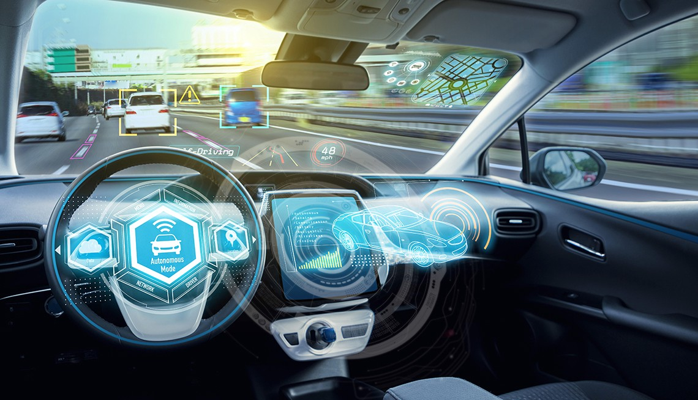

artificial intelligence
Automotive

Advancements in AI have contributed to the growth of the automotive industry through the creation and evolution of self-driving vehicles. As of 2016, there are over 30 companies utilizing AI into the creation of self-driving cars.
A few companies involved with AI include Tesla, Google, and Apple.Many components contribute to the functioning of self-driving cars. These vehicles incorporate systems such as braking, lane changing, collision prevention, navigation and mapping. Together, these systems, as well as high-performance computers, are integrated into one complex vehicle.[Recent developments in autonomous automobiles have made the innovation of self-driving trucks possible, though they are still in the testing phase. The UK government has passed legislation to begin testing of self-driving truck platoons in 2018.Self-driving truck platoons are a fleet of self-driving trucks following the lead of one non-self-driving truck, so the truck platoons aren't entirely autonomous yet. Meanwhile, the Daimler, a German automobile corporation, is testing the Freightliner Inspiration which is a semi-autonomous truck that will only be used on the highway. One main factor that influences the ability for a driver-less automobile to function is mapping. In general, the vehicle would be pre-programmed with a map of the area being driven. This map would include data on the approximations of street light and curb heights in order for the vehicle to be aware of its surroundings.
However, Google has been working on an algorithm with the purpose of eliminating the need for pre-programmed maps and instead, creating a device that would be able to adjust to a variety of new surroundings.
Some self-driving cars are not equipped with steering wheels or brake pedals, so there has also been research focused on creating an algorithm that is capable of maintaining a safe environment for the passengers in the vehicle through awareness of speed and driving conditions.
Another factor that is influencing the ability of a driver-less automobile is the safety of the passenger. To make a driver-less automobile, engineers must program it to handle high-risk situations.
These situations could include a head-on collision with pedestrians.
The car's main goal should be to make a decision that would avoid hitting the pedestrians and saving the passengers in the car.
But there is a possibility the car would need to make a decision that would put someone in danger. In other words, the car would need to decide to save the pedestrians or the passengers.
The programming of the car in these situations is crucial to a successful driver-less automobile.